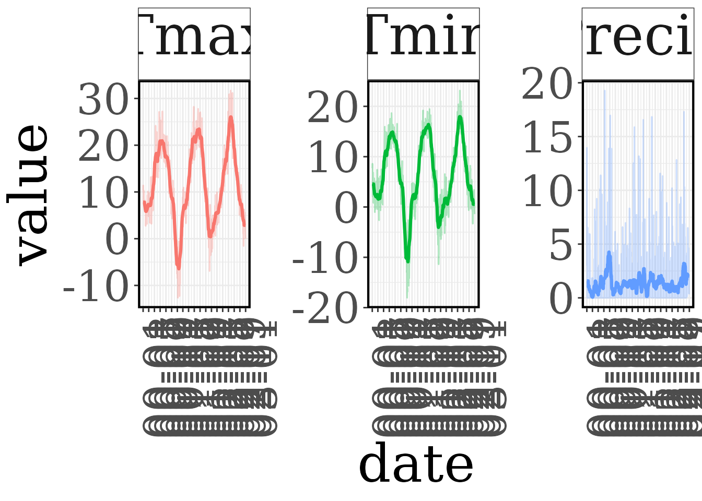
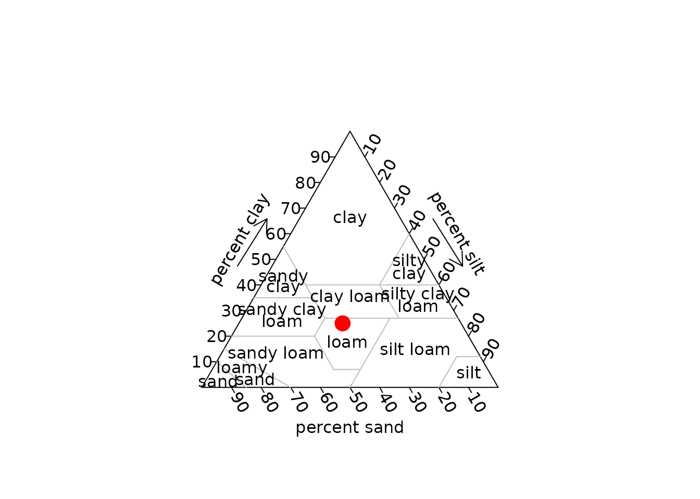

The 3D-CMCC-FEM needs a set of .txt files, all in the same directory
and named after the site (Site) or the species. This
vignette describes them and the helpers that create them. All the
helpers write the file in outdir and return the data
invisibly; setup_inputs() calls them in one go (see
vignette("R3DFEM")).
| File | Content | Helpers |
|---|---|---|
Site_stand.txt |
initial stand: species, age, number of trees, DBH, height per class |
make_stand(),
virtual_stand_generator()
|
Site_meteo.txt |
daily weather |
make_meteo(), make_meteo_EOBS(),
make_CCS(), check_meteo_3DFEM()
|
Site_co2.txt |
yearly atmospheric CO2 concentration |
make_co2(), make_CCS()
|
Site_soil.txt |
soil texture and depth |
make_soil(), make_soil_ISRIC()
|
Site_topo.txt |
elevation | make_topo() |
Site_management.txt |
management events (only with man = "var") |
make_management() |
Species.txt |
species parameterization (version 5.7) |
list_species(), copy_species(),
read_species(), set_species_param()
|
Stand
One row per class (species, age, DBH, height) and year. With
man = "var" and pres_dens = "on" the rows of
the following years prescribe the stand density.
make_stand("Collelongo", year = 2000, age = c(90, 120), species = "Fagussylvatica",
n_trees = c(600, 150), avdbh = c(28, 45), height = c(22, 27), outdir = inputdir)
#> Outdir does not exist. It will be created
#> file /tmp/RtmpPy0Xyv/Collelongo/Collelongo_stand.txt savedMeteo
Daily data with the columns Year, Month, n_days, Rg_f (MJ
m-2 day-1), Ta_f, Tmax, Tmin (°C), RH_f (%), Ts_f,
Precip (mm day-1), SWC, LAI, ET and WS_f (-9999 when not
available). make_meteo() converts any daily data.frame
(e.g. a weather station): it computes the mean temperature if missing,
converts the radiation from W m-2
(rad_unit = "W") and checks the result with
check_meteo_3DFEM().
soro <- read.delim(system.file("extdata", "soro", "Soroe_meteo.txt", package = "R3DFEM"))
station <- data.frame(date = as.Date(sprintf("%d-%02d-%02d", soro$Year, soro$Month, soro$n_days)),
Rg_f = soro$Rg_f / 0.0864, Tmax = soro$Tmax, Tmin = soro$Tmin,
Precip = soro$Precip, RH_f = soro$RH_f)
station <- subset(station, date < as.Date("2031-01-01"))
head(station, 3)
#> date Rg_f Tmax Tmin Precip RH_f
#> 1 1997-01-01 6.293981 7.4441 1.89820 0.0000 94.295
#> 2 1997-01-02 3.076042 9.4783 5.94700 3.2897 92.315
#> 3 1997-01-03 19.307870 10.1170 0.28823 0.0000 84.790
meteo <- make_meteo(station, "Collelongo", rad_unit = "W", outdir = inputdir)
#> Warning in check_meteo_3DFEM(meteo, correct = FALSE, impute = FALSE, save =
#> FALSE): Relative humidity is greater than 100 for row(s): 384 414 715 1446 1447
#> 1448 1449 1450 1451 1452 1453 1455 1456 1457 1458 1459 1460 1461 1462 1465 1466
#> 1471 1472 1798 1805 1806 1816 1817 1818 1831 1832 1833 2169 2170 2913 2918 2941
#> 3268 3269 3270 3306 3633 3634 3635 3671 3998 3999 4000 4368 4369 4370 4371 4372
#> 4373 4374 4375 4377 4378 4379 4380 4381 4382 4383 4402 4432 4733 4749 4752 4753
#> 4758 4759 5085 5092 5093 5103 5104 5105 5835 5840 5863 5893 6194 6593 6623 6924
#> 7296 7301 7310 7311 7312 7648 7649 7689 7719 8020 8040 8041 8042 8378 8379 8757
#> 8762 8771 8772 8773 9109 9110 9150 9180 9481 10212 10213 10214 10215 10216
#> 10217 10218 10219 10221 10222 10223 10224 10225 10226 10227 10962 10963 10964
#> 11300 11301 11673 11674 11675 11676 11677 11678 11679 11680 11682 11683 11684
#> 11685 11686 11687 11688
#> Warning in check_meteo_3DFEM(meteo, correct = FALSE, impute = FALSE, save =
#> FALSE): There are 40 row(s) in which precipitation is less than the precision
#> of the model!
#> file /tmp/RtmpPy0Xyv/Collelongo/Collelongo_meteo.txt saved
plot_meteo_3DFEM(file.path(inputdir, "Collelongo_meteo.txt"), var = c("Tmax", "Tmin", "Precip"),
daterange = c("2000-01-01", "2002-12-31"), window = 30)

For European sites the weather can be extracted from E-OBS (version 30.0 or 29.0). The netCDF files (ensemble mean, 0.1 degrees, variables hu, qq, rr, tg, tn, tx) are not distributed with the package: download them and set their directory once.
options(R3DFEM.eobs_dir = "D:/EOBS")
make_meteo_EOBS(data.frame(x = 13.59, y = 41.85), crs = 4326, site = "Collelongo",
daterange = c("2000-01-01", "2023-12-31"), outdir = inputdir)make_CCS() builds a detrended “current climate scenario”
by resampling the observed years (leap years with leap years), e.g. to
run the model beyond the observations:
CO2
Yearly concentration (ppm). make_co2() accepts a
constant, one value per year or known values interpolated linearly over
the years:
co2 <- make_co2("Collelongo", years = 2000:2100,
co2 = data.frame(year = c(2000, 2020, 2100), CO2_ppm = c(369, 412, 600)),
outdir = inputdir)
#> file /tmp/RtmpPy0Xyv/Collelongo/Collelongo_co2.txt saved
co2[c(1, 21, 101), ]
#> year CO2_ppm
#> 1 2000 369
#> 21 2020 412
#> 101 2100 600Soil and topography
make_soil("Collelongo", lat = 41.85, lon = 13.59, clay = 25, silt = 35, sand = 40,
soil_depth = 100, outdir = inputdir)
#> file /tmp/RtmpPy0Xyv/Collelongo/Collelongo_soil.txt saved
make_topo("Collelongo", elev = 1560, outdir = inputdir)
#> file /tmp/RtmpPy0Xyv/Collelongo/Collelongo_topo.txt saved
plot_soil_3DFEM(file.path(inputdir, "Collelongo_soil.txt"), pch = 21, bg.symbols = "red", cex = 2)
The texture of European sites can be taken from SoilGrids (raster not distributed with the package):
options(R3DFEM.isric_file = "D:/SoilGrids/ISRIC.tif")
make_soil_ISRIC(data.frame(x = 13.59, y = 41.85), crs = 4326, site = "Collelongo",
outdir = inputdir)Management
Used with man = "var": years of thinning (and their
intensity, % of basal area), harvesting and regeneration.
make_management("Collelongo", thinning = c(2010, 2030), thinning_int = c(25, 20),
harvesting = 2060, outdir = inputdir)
#> file /tmp/RtmpPy0Xyv/Collelongo/Collelongo_management.txt saved
readLines(file.path(inputdir, "Collelongo_management.txt"))
#> [1] "Thinning,2010,2030" "Thinning_int,25,20" "Harvesting,2060"With man = "on" the model manages the stand with the
parameters ROTATION, THINNING and THINNING_INTENSITY of the species file
instead.
Species parameters
The package contains the parameterizations of the version 5.7 of the
model. Coppice stands have their own files
(e.g. Fagussylvatica_coppice).
list_species()
#> [1] "Abiesalba" "Betulapubescens" "Castaneasativa_coppice"
#> [4] "Castaneasativa" "Fagussylvatica_coppice" "Fagussylvatica"
#> [7] "Larixdecidua" "Piceaabies" "Pinushalepensis"
#> [10] "Pinuslaricio" "Pinuspinaster" "Pinuspinea"
#> [13] "Pinussylvestris" "Quercuscerris_coppice" "Quercuscerris"
#> [16] "Quercusilex_coppice" "Quercusilex" "Quercuspubescens"
#> [19] "Quercusrobur"
copy_species("Fagussylvatica", inputdir)
sp <- read_species(file.path(inputdir, "Fagussylvatica.txt"))
nrow(sp)
#> [1] 94
head(sp)
#> parameter value
#> 1 LIGHT_TOL 1.000
#> 2 PHENOLOGY 0.100
#> 3 ALPHA 0.057
#> 4 EPSILONgCMJ 0.690
#> 5 GAMMA_LIGHT 0.000
#> 6 K 0.710set_species_param() changes one or more parameters,
keeping the comments and the order of the file, and returns the previous
values (with outfile it writes a new file, e.g. a
site-specific parameterization):
set_species_param(file.path(inputdir, "Fagussylvatica.txt"), LIGHT_TOL = 2, ROTATION = 140)The version 5.7 needs all the parameters of these files, including
CONV_VOL_FACTOR (conversion of stem biomass to volume).
Files of older versions are refused by check_inputs() and
run_3DCMCCFEM():
old <- file.path(tempdir(), "old")
dir.create(old)
file.copy(list.files(inputdir, full.names = TRUE), old)
#> [1] TRUE TRUE TRUE TRUE TRUE TRUE TRUE
sp_lines <- readLines(file.path(old, "Fagussylvatica.txt"))
writeLines(sp_lines[!grepl("^CONV_VOL_FACTOR", sp_lines)], file.path(old, "Fagussylvatica.txt"))
check_inputs("Collelongo", "Fagussylvatica", 2000, 2030, man = "off", inputdir = old)
#> Error in `.check_run_inputs()`:
#> !
#> Parameter(s) CONV_VOL_FACTOR missing in 'Fagussylvatica.txt' (required by the version 5.7 of the model, see list_species()).Checking the inputs
check_inputs("Collelongo", "Fagussylvatica", year_start = 2000, year_end = 2030,
man = "var", pres_dens = "off", inputdir = inputdir,
rep_species = "Fagussylvatica", rep_trees = 3000, rep_age = 3, rep_dbh = 1,
rep_lai = 1, rep_height = 1.3)
#> All checks passed
list.files(inputdir)
#> [1] "Collelongo_co2.txt" "Collelongo_management.txt"
#> [3] "Collelongo_meteo.txt" "Collelongo_soil.txt"
#> [5] "Collelongo_stand.txt" "Collelongo_topo.txt"
#> [7] "Fagussylvatica.txt"For all details on the input files see the model User Guide.